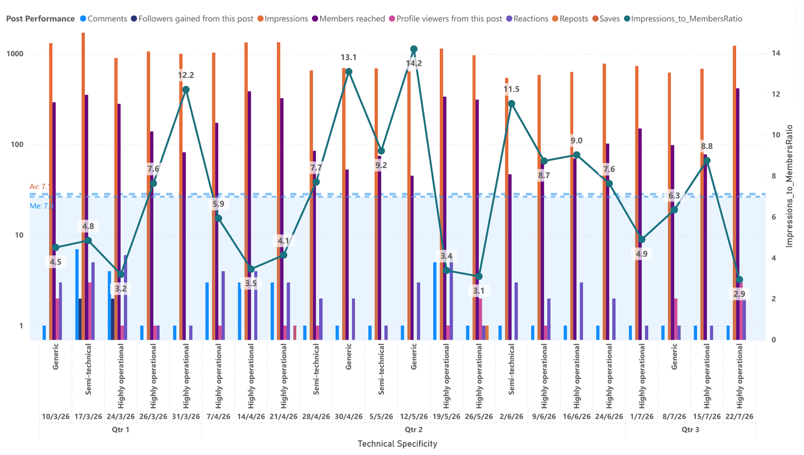
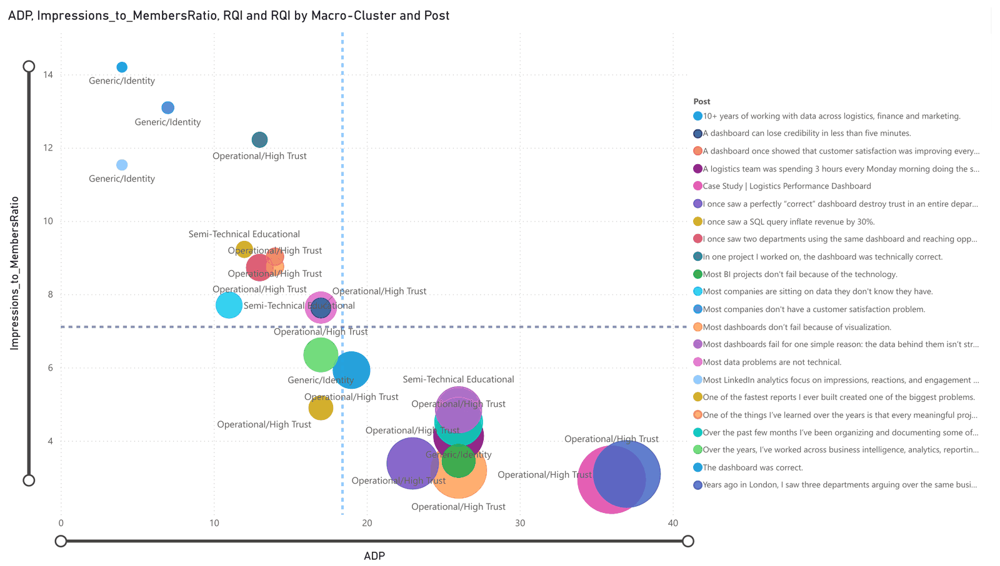
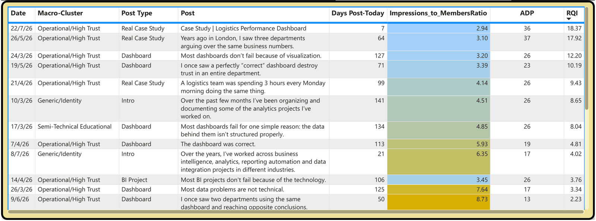

The challenge
LinkedIn's native analytics show impressions, reactions and comments post by post, but they don't answer the questions that matter for a consultant: which kind of content reaches people beyond my immediate network, and is it reaching the audience I actually want to work with?
With only a few dozen posts, the data was also sparse: standard engagement rates were too noisy to compare content types reliably.
The solution
Post-level exports from LinkedIn are modelled in Power BI around two custom KPIs and a content classification:
CollectPost metrics and audience demographics exported from LinkedIn
ClassifyEach post tagged by type and by technical specificity, grouped into three macro-clusters
MeasureADP, impressions-to-members ratio and RQI computed per post
DecideFindings turned into concrete changes to content and targeting
What the solution includes
ADPAverage Distribution by Post: how many distinct audience segments a post reaches
Impressions-to-members ratioLower means a post reaches more different people instead of the same ones repeatedly
RQIReach Quality Index: combines breadth, reach efficiency and recency
Content clustersOperational/High Trust, Semi-Technical Educational, Generic/Identity
Audience analysisCompany size, seniority, industry, job title and location
Drill-downFrom macro-cluster to specificity to the single post



Results
- Operational, experience-based posts reach people most efficiently (average ratio 4.60, against 7.13 for generic posts)
- Real case study posts lead the RQI ranking and have the best ratio of any post type (3.36)
- Audience analysis showed a targeting gap: posts reached mostly entry-level, senior and manager profiles, and comparatively few owners and directors, who are the people who hire consultants
- A clear direction: more concrete case-based posts, and active networking with the target audience instead of relying on reach alone
Stack
Power BI
DAX
Data Modeling
KPI Design
Behavioral Analytics
Built on my own LinkedIn post data (March–July 2026). No third-party or client data is shown.